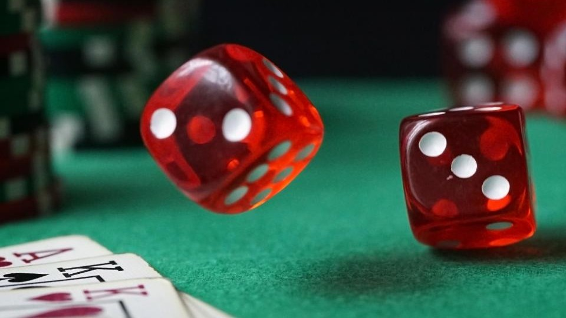
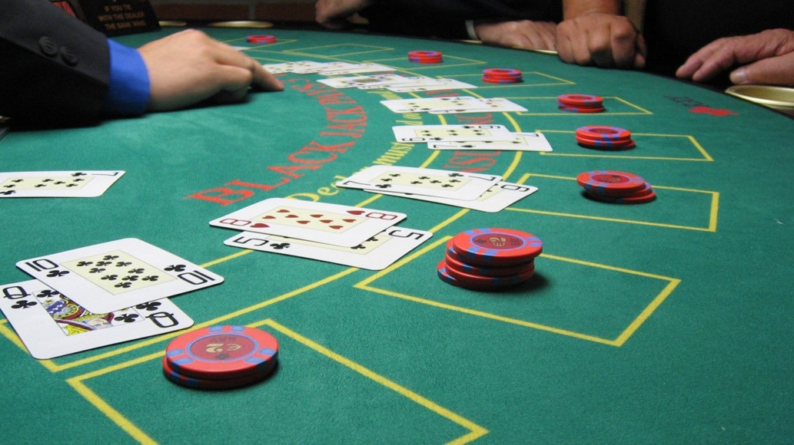
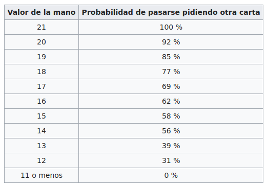
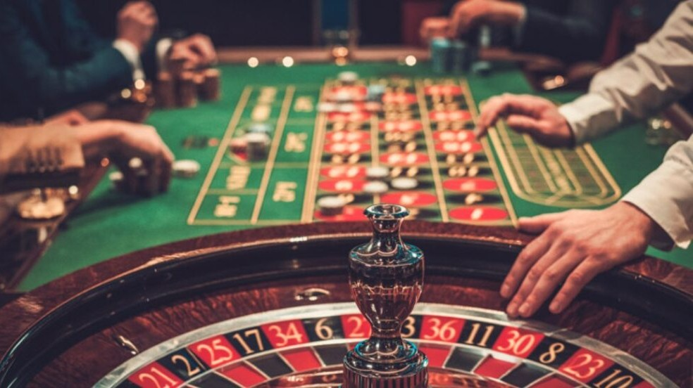
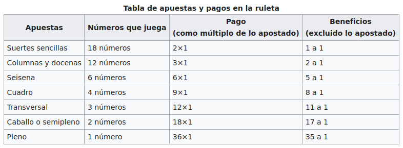
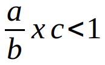

No se ustedes, pero yo siempre busque la forma de ganarle al casino, pero cómo?
Primero analicemos como trabaja un casino, con que juegos cuenta la mayoría, al menos en Argentina, y cual nos convendría jugar para maximizar nuestras ganancias.
Un casino es un establecimiento en el cual la atracción principal son los juegos de azar. La lógica de todos estos juegos consiste, en su nivel más básico, en que un jugador hace una apuesta en uno de los juegos donde, si se cumple la condición para ganar se le devuelve al jugador una suma igual o mayor a su apuesta, o de lo contrario, el jugador pierde su apuesta.
Las condiciones para ganar, las apuestas y las ganancias, están estipuladas de antemano. Estas se determinan por estadística de modo tal de dar cierta ventaja al casino. De este modo, si pensáramos en un jugador que jugara eternamente, el saldo sería a favor del casino de acuerdo a la proporción estipulada previamente. Cabe destacar que estas probabilidades en los juegos electrónicos se encuentran reglamentadas por el ente regulador para que no sean abusivas contra la población, pero la falta de controles periódicos hacen que esto no siempre se cumpla.
Ahora, suponiendo que todo funciona correctamente, a qué jugamos? En los casinos podemos encontrar maquinas tragamonedas, ruleta, blackjack, dados y poker.
Hay que analizar como es nuestra interacción con el juego. Si nuestra meta es maximizar las probabilidades de ganar, debemos descartar todos aquellos en los que no podamos decidir el valor de la apuesta ni la forma en que la hacemos, por lo tanto las tragamonedas quedan fuera.
Por otro lado esta el Poker, que si bien tiene azar, depende en su gran mayoría de la habilidad del jugador, siendo este el que mayores probabilidades de ganar podría tener, pero como ello dependiendo exclusivamente del jugador no se puede obtener un método que replique los resultados para todas las personas, por lo tanto, también queda descartado para este análisis.
Finalmente están la ruleta, el blackjack y los dados. En estos juegos, ademas del azar, existe una interacción del jugador, lo que nos da la posibilidad de planear una estrategia para aumentar nuestras probabilidades de ganar. Para determinar cual de ellos da mejores chances repasemos sus reglas de juego y calculemos las probabilidades.

Cuando se juega en un casino contra la banca, o casa, uno o varios jugadores realizan diversas apuestas al resultado que se obtendrá en los dados que lance alguno de los jugadores, el cual es designado tirador. Para comenzar el juego, durante lo que se conoce como tiro de salida, el jugador necesita realizar una apuesta que se conoce como línea de pase, en la que se busca obtener un siete (conocido como siete natural o siete ganador) o un once en la combinación de dados para ganar la apuesta, que paga uno a uno. Si por el contrario obtiene un dos, tres o doce (números conocidos como craps) pierde automáticamente su apuesta y necesitará colocar de nuevo una apuesta para seguir tirando.
Si durante el primer lanzamiento no obtiene un siete u once (con que gana), o un dos, tres o doce (con que pierde), el juego entrará en una segunda etapa, en la que se marcará el punto en el número que se obtenga en dicho lanzamiento (cuatro, cinco, seis, ocho, nueve o diez). En esta etapa, el tirador buscará volver a obtener ese número en los dados, con lo que ganará el roll o ronda, antes de obtener un siete, llamado siete fuera o seven out. Si logra repetir el número del punto, el jugador ganará su apuesta y se le pagará uno a uno el monto. Si por el contrario si aparece un siete, perderá su apuesta. En ambos casos se considera que la ronda ha terminado y el juego vuelve a comenzar, aunque si la ronda culminó debido a un siete fuera se designará un nuevo tirador de entre los distintos jugadores.
Calculando las probabilidades de estas situaciones da que tenemos un 22,22% de probabilidades de ganar en el tiro de salida y 11,11% para perder. Si sale cualquier otro numero, se pasa a la segunda etapa donde se deberá sacar el mismo valor obtenido para ganar, y se pierde con el 7. Ahora las nuevas probabilidades dependerán del numero obtenido anteriormente, las cuales serán del 13,89% para los números 6 y 8, 11,11% para los números 5 y 9, y 8,33% para los números 4 y 10, por lo que estamos en desventaja contra el 7 que tiene una probabilidad de salir del 16,66%.
Por la forma en que se desarrolla el juego no lo recomiendo, ya que comenzamos con un 66% de probabilidades de pasar a la segunda etapa donde la probabilidad de ganar, en el mejor de los casos es del 14%.
Una mejor opción es que nuestra apuesta fuese del tipo “barra de no pase”, que es prácticamente lo opuesto a lo descripto arriba (pero con el 12 como numero de empate). De este modo se tendría una mejor probabilidad de ganar, aunque seguiría siendo menor a la de perder.
Con todo esto, descarto a los dados como un juego con el que se pueda llegar a ganar a la larga.

El Blackjack, también llamado veintiuno, es un juego de cartas con una o más barajas inglesas de 52 cartas sin los comodines, que consiste en sumar un valor lo más próximo a 21 pero sin pasarse. Cada jugador de la mesa juega únicamente contra el crupier, intentando conseguir una mejor jugada que este. El crupier está sujeto a reglas fijas que le impiden tomar decisiones sobre el juego. Por ejemplo, está obligado a pedir carta siempre que su puntuación sume 16 o menos, y obligado a plantarse si suma 17 o más. Las cartas numéricas suman su valor, las figuras suman 10 y el As vale 11 o 1, a elección del jugador. En el caso del crupier, los Ases valen 11 mientras no se pase de 21, y 1 en caso contrario. La mejor jugada es conseguir 21 con solo dos cartas, esto es con un As más carta de valor 10. Esta jugada se conoce como Blackjack o 21 natural. Un Blackjack gana sobre un 21 conseguido con más de dos cartas.
El crupier reparte dos cartas visibles a cada jugador, luego pondrá su primera carta boca arriba de manera que sea visible para el resto de jugadores, quienes podrán tomar sus decisiones en función de esa carta, mientras que el crupier tendrá una segunda carta boca abajo en espera de su turno. Cada jugador compite únicamente contra el crupier, siendo indiferente a las cartas que tengan el resto de los demás jugadores.
Cada jugador tiene la posibilidad de plantarse y quedarse con cualquier puntuación, o de pedir más cartas hasta alcanzar los 21 puntos. Alcanzar los 21 puntos con más de una carta extra no se considera blackjack, siendo por tanto esa jugada inferior al blackjack con dos cartas. Si al pedir una nueva carta se pasa de 21, el jugador pierde automáticamente la partida, y sus cartas y apuesta serán retiradas por el crupier. Cuando todos los jugadores hayan pedido sus cartas, el crupier mostrará su segunda carta boca abajo y sacará más cartas si fuera necesario hasta sumar 17 o más puntos para alcanzar el número 21, momento en el que se plantará.
Entre el crupier y cada jugador, gana finalmente quién obtenga blackjack (As+10) o quien tenga la puntuación más alta sin pasarse de los 21 puntos, habiendo la posibilidad de empate y recuperar lo apostado.
Estas son las probabilidades de pasarse pidiendo una carta extra:

Para obtener las probabilidades exactas de este juego hace falta un estudio con mayor detenimiento debido a la gran cantidad de variaciones que se pueden dar y me llevaría mas tiempo del que tengo disponible en este momento. A grandes rasgos podemos afirmar de todos modos que el crupier cuenta con ventaja respecto a los jugadores, ya que estos no solo compiten contra él, sino que contra si mismos, porque en caso de pasarse de 21 pierden automáticamente sin importar lo que el crupier tenga. De todos modos existen técnicas para aumentar las probabilidades de ganar, pero no son bien recibidas si nos descubren usándolas.

El diseño que actualmente se utiliza en las ruletas de los casinos se debe al filósofo y matemático francés Blaise Pascal, quien buscaba un juego en donde el azar fuese lo más equitativo posible.
En ese diseño, el orden se basa en las siguientes normas:
A cada lado de un número menor o igual a 18 hay un número mayor que 18 y viceversa, con dos excepciones: a) el cero, b) justo enfrente de él con el 5 y el 10 juntos.
Los números negros son aquellos en los que la reducción de la suma de sus dígitos es par. Así, por ejemplo, el 29 es negro (2 + 9 = 11, 1 + 1 = 2). Las excepciones son el 10 y el 28 (ambos negros).
Partiendo el plato por la mitad, con una línea imaginaria entre el 0 y el 5, en cada una de las mitades debe haber la misma cantidad de números que pertenezcan a cada una de las 3 docenas (6 números de cada docena) y la misma cantidad de números que pertenezcan a cada una de las 3 columnas (6 números de cada columna).
Los números rojos y negros deben estar alternados.
Los números pares e impares deben estar distribuidos de forma regular, de manera que no haya más de dos números pares o impares adyacentes.
Estas normas se cumplen en la ruleta europea (con un cero), pero no en la americana (con doble cero), donde la distribución es más irregular.
Dependiendo el tipo de apuesta se pueden dar los siguientes pagos:

y las probabilidades de que salgan son (teniendo en cuenta la peor situación, con la versión americana):
suertes sencillas: 18/38 = 47,37%
columnas y docenas: 12/38 = 31,58%
seisena: 6/38 = 15,79%
cuadro: 4/38 = 10,53%
transversal: 3/38 = 7,89%
caballo o semipleno: 2/38 = 5,26%
pleno: 1/38 = 2,63%
Para el análisis vamos a usar el método de apuesta Martingala. Este consiste en quedarse con las apuestas sencillas, elegir una categoría (para el ejemplo voy a tomar el rojo) y mantenerlo hasta ganar. Este método se basa en que si salio negro, la probabilidad de que vuelva a salir es menor, y si vuelve a salir, la próxima sera aun menor, y así sucesivamente hasta que salga rojo. Hay que tener en cuenta que se inicia con la apuesta mínima, y cada vez que se pierda hay que duplicar la apuesta. Cuando se gana se reinicia el ciclo con la apuesta mínima. Pero que tan efectivo es?
Bueno, realizando un análisis exhaustivo con MatLab obtuve que la probabilidad esta estrechamente relacionada con la apuesta mínima y máxima que permite la mesa, ya que esto determina la cantidad de veces que vamos a poder duplicar nuestra apuesta cada vez que perdamos. Por los datos que pude obtener sobre apuestas mínimas y máximas admitidas generalmente por los casinos, vamos a poder duplicar nuestra apuesta entre 6 y 8 veces. Si pensamos en que la probabilidad de que perdamos 8 veces seguidas manteniendo siempre el mismo color es del 0,5% es fácil caer en la tentación de pensar que el sistema es infalible, pero nada mas lejos de la realidad.
Por medio del modelo matemático descubrí que aunque no tuviésemos limitaciones con las apuestas, y por lo tanto, tampoco limitaciones en la cantidad de veces que podríamos duplicarla, la capacidad de generar ganancias a largo plazo es nula.
Simulando que apuesto 240 veces por día (una vez cada 2 minutos durante 8 horas) durante 1.000.000 de días, la probabilidad de ganar rondó el 31%, con lo cual la suposición inicial aplicando el método Martingala se desmorona, ya que a largo plazo terminamos perdiendo 7 de cada 10 juegos.
Una situación interesante se da al estudiar el caso hipotético en el que el casino nos permite duplicar un numero mayor de veces (para el ejemplo tomo 20 veces, que son 1.048.576 veces la apuesta inicial) y suponiendo que contamos con el dinero necesario, corremos la simulación a 1.000.000 de días. Resulta que la probabilidad de ganar sube hasta el 99%, pero al analizar el balance de capital durante el desarrollo de la simulación nos encontramos con que perdimos dinero. A pesar de haber ganado el 99% de las veces, el capital necesario para iniciar cada ciclo que perdimos fue mucho mayor que el generado en las partidas ganadas.
A continuación dejo imágenes de algunos de los ciclos (positivos y negativos); del calculo general a 1.000.000 de días con hasta 6 y 8 aumentos de apuesta; y dos casos hipotéticos con hasta 12 y 20 aumentos de apuesta.
Para concluir puedo asegurar que no se puede ganar en un casino, por buena que sea nuestra técnica, a la larga, todo esta pensado para beneficiar al casino, por lo tanto debería evitarse a toda costa.
Todos los juegos terminan respondiendo a la siguiente ecuación:

Donde "a" representa las oportunidades de ganar, "b" a todos los resultados posibles, y "c" el premio que se recibiría al ganar esa apuesta.
Si la ecuación es menor a 1 (y siempre lo es en estos casos), estadísticamente el juego, a largo plazo, esta beneficiando al casino.
Les dejo el link para que puedan descargar el archivo de MatLab, por si les interesa examinarlo con mayor detenimiento.
{kind=link}
{kind=link}
{kind=link}
{kind=link}
{kind=link}
{kind=link}
{kind=link}
{kind=link}
{kind=link}
{kind=link}
{kind=link}
{kind=link}